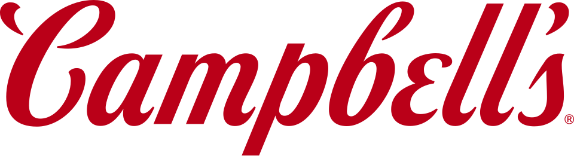

캠벨 수프 컴퍼니 Campbell's
캠벨 수프 컴퍼니(Campbell's)는 통조림 수프 제품으로 잘 알려진 미국 식품 회사이다. 본사는 뉴저지주 캠던에 있다.
최종 업데이트

캠벨 수프 컴퍼니는 어떤 브랜드인가
캠벨 수프 컴퍼니(Campbell's)는 통조림 수프 제품으로 가장 잘 알려진 미국 식품 회사이다. 빨간색과 흰색으로 이루어진 클래식한 캔 디자인은 미국 팝아트에 사용된 것을 계기로 미국을 대표하는 상징물이 되었다.
캠벨스는 인수합병을 통해 미국 최대 가공식품 회사 중 하나로 성장했으며, 캠벨스 브랜드 외에도 Pepperidge Farm, Snyder's of Hanover, V8, Swanson 등 여러 브랜드를 보유하고 있다. 캠벨스 브랜드로는 수프와 기타 통조림 식품, 제과제품, 음료, 스낵을 생산한다.
회사는 뉴저지주 캠던에 본사를 두고 있다. 현재 사명은 기존의 Campbell Soup Company에서 The Campbell's Company로 바뀌었다.
캠벨 수프 컴퍼니는 어떻게 시작되고 성장했나
회사는 1869년 브리지턴 출신 과일 상인 Joseph A. Campbell과 사우스저지 출신 제빙기 제조업자 Abraham Anderson에 의해 설립되었으며, 통조림 토마토와 채소, 젤리, 수프, 조미료, 다진 고기 등을 생산했다.
1876년 앤더슨이 동업 관계에서 물러나면서 회사는 "Joseph A. Campbell Preserve Company"가 되었다.
1894년 캠벨이 은퇴하고 Arthur Dorrance가 사장이 되었으며, 1896년 회사는 "Joseph Campbell & Co."로 재편되었다. 1897년 입사한 화학자 John T.
Dorrance는 수프에서 가장 많은 비중을 차지하는 물의 양을 절반으로 줄여 수프를 농축하는 상업적으로 실현 가능한 방법을 개발했고, 1914년부터 1930년까지 사장을 지내며 캠벨 가문의 지분을 인수했다. 1898년에는 임원 Herberton Williams의 제안으로 코넬 대학교 미식축구팀 유니폼의 카닐리언 레드 색상에서 영감을 받아 빨간색과 흰색 배색이 채택되었다.
캠벨 수프 컴퍼니의 브랜드 아이덴티티는 무엇인가
빨간색과 흰색의 클래식한 캔 디자인은 미국 팝아트에 사용되며 미국을 대표하는 상징물이 되었다는 점이 캠벨스의 정체성이다.
캠벨 수프 컴퍼니의 대표 제품과 서비스는 무엇인가
캠벨스는 대표 브랜드인 캠벨스 외에도 Pepperidge Farm의 빵·쿠키·크래커, Franco-American의 그레이비·파스타, V8 채소 주스, Swanson의 육수, Godiva 초콜릿 등으로 브랜드 포트폴리오를 확장했다. 이러한 확장은 1949년 수석부사장으로 선임되고 1953년부터 1972년까지 사장 겸 CEO를 지낸 William Beverly Murphy의 주도로 이루어졌으며, 그는 회사를 상장시키기도 했다.
1970~80년대에는 Pietro's Pizza, Annabelle's, Clark, Herfy's를 인수하고 Hanover Trail과 H.T. McDoogal's를 출시하며 외식업에도 진출했다.
현재 캠벨스 브랜드로는 수프와 통조림 식품, 제과제품, 음료, 스낵을 생산하며, Pepperidge Farm, Snyder's of Hanover, V8, Swanson 등도 보유 브랜드로 있다.
캠벨 수프 컴퍼니는 지금 어떤 상태인가
회사명은 기존 Campbell Soup Company에서 The Campbell's Company로 바뀌었다. 뉴저지주 캠던에 본사를 두고 있으며, 인수합병을 통해 미국 최대 가공식품 회사 중 하나로 성장했다.
1989년 발표되어 1991년 문을 닫은 캠던 1공장을 비롯해 메릴랜드주 포코모크시티·크리스필드, 테네시주 스머나 공장 등이 비슷한 시기에 폐쇄되었다.
캠벨 수프 컴퍼니 로고는 어떻게 변해왔나
자주 묻는 질문
캠벨 수프 컴퍼니는 어느 나라 브랜드인가요?
캠벨 수프 컴퍼니는 미국의 식음료 브랜드입니다.
캠벨 수프 컴퍼니는 언제 설립되었나요?
캠벨 수프 컴퍼니는 1869년 설립되었습니다.
캠벨 수프 컴퍼니의 브랜드 아이덴티티는 무엇인가요?
빨간색과 흰색의 클래식한 캔 디자인은 미국 팝아트에 사용되며 미국을 대표하는 상징물이 되었다는 점이 캠벨스의 정체성이다.
캠벨 수프 컴퍼니의 대표 제품은 무엇인가요?
캠벨스는 대표 브랜드인 캠벨스 외에도 Pepperidge Farm의 빵·쿠키·크래커, Franco-American의 그레이비·파스타, V8 채소 주스, Swanson의 육수, Godiva 초콜릿 등으로 브랜드 포트폴리오를 확장했다.
캠벨 수프 컴퍼니는 현재 어떤 상태인가요?
회사명은 기존 Campbell Soup Company에서 The Campbell's Company로 바뀌었다.
캠벨 수프 컴퍼니의 창업자는 누구인가요?
캠벨 수프 컴퍼니의 창업자는 Joseph A. Campbell입니다(위키데이터 기준).
캠벨 수프 컴퍼니의 본사는 어디에 있나요?
캠벨 수프 컴퍼니의 본사는 캠던에 있습니다(위키데이터 기준).
출처와 검증
캠벨 수프 컴퍼니 관련 참고: 공식 웹사이트 · 위키데이터 Q1030544 · 한국어 위키백과 · 영어 위키백과. 브랜드명은 한글과 원어를 함께 표기하되 데이터에 없는 표기는 만들지 않습니다. 기원 국가·설립연도는 검수된 정의문에서 확인된 값을 우선하고, 없을 때만 공식 웹사이트 URL이 일치하는 위키데이터 개체의 값을 씁니다. 위키데이터 값은 2026-09-26 기준입니다.